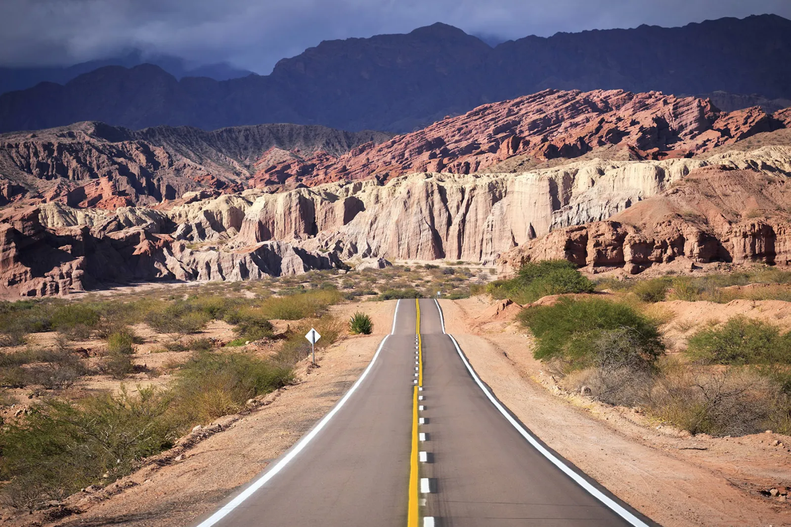

Semana Santa 2027 en Salta y Jujuy, con combi y chofer
En 2027 el fin de semana largo va del miércoles 24 al domingo 28 de marzo. Es una de las semanas con más turistas del año y todos los circuitos se llenan a la vez. Reservá con tiempo la combi o la 4x4 con chofer para tus excursiones, tus traslados al aeropuerto o los pasajeros de tu agencia.
Las fechas
Cinco días seguidos, del 24 al 28 de marzo de 2027
En 2027 el feriado del 24 de marzo cae miércoles y coincide con el Miércoles Santo, así que el fin de semana largo empieza ese día.
| Día | Qué es |
|---|---|
| Domingo 21 de marzo | Domingo de Ramos, comienzo de la Semana Santa. |
| Miércoles 24 de marzo | Feriado nacional (Día de la Memoria) y Miércoles Santo. |
| Jueves 25 de marzo | Jueves Santo. |
| Viernes 26 de marzo | Viernes Santo, feriado nacional. |
| Domingo 28 de marzo | Domingo de Pascua. |
Feriados verificados el 10/10/2026 en el calendario de feriados 2027 publicado por La Nación. Lausof SRL es una empresa de transporte: no organiza las celebraciones religiosas ni las actividades de la semana, que se consultan en los sitios de turismo de Salta y de Jujuy.
Cómo fue Semana Santa 2026
Hoteles casi llenos y casi uno de cada seis visitantes, extranjero
Los números del informe de Semana Santa 2026 del Ministerio de Turismo de Salta explican por qué las unidades con chofer se reservan con semanas de anticipación.
Llegaron a Salta durante el fin de semana largo, con una estadía promedio de 2,7 noches.
En los principales destinos de la provincia; 77 % en la ciudad de Salta y 79,1 % en los destinos cercanos.
Los que más llegaron fueron de Brasil (17,2 %), Francia (16,6 %), Uruguay (10,3 %), España (9 %) y Alemania (5,5 %).
Entre los más visitados figuran San Lorenzo, Coronel Moldes, Cafayate, Chicoana, Cachi, La Caldera, Iruya y la ciudad de Salta.
La Semana Santa en la Quebrada
La Virgen de Punta Corral y las ermitas de Tilcara
En la Quebrada de Humahuaca la semana tiene su propio calendario de fe. Este fue el programa de 2026 según la Secretaría de Turismo de Jujuy; el de 2027 todavía no está publicado. Si se repite el esquema, en 2027 el descenso a Tilcara sería el miércoles 24 de marzo.
Desde las 07:00, descenso de la imagen de la Virgen de Punta Corral desde su santuario hasta el pueblo de Tumbaya.
A las 05:00, bendición y descenso de la Virgen hacia Tilcara con las bandas de sikuris y los peregrinos. En 2026 la imagen llegó al atrio de la iglesia de Tilcara a las 20:30.
Al anochecer, descenso del Señor de la Cruz y Vía Crucis por las ermitas tilcareñas, las estaciones que el pueblo arma para la procesión.
Tilcara recibe esos días a peregrinos y visitantes de toda la región. Con chofer, no hace falta buscar dónde estacionar ni manejar de noche de vuelta al hotel.
Lo que hacemos en Semana Santa
Excursiones, traslados y unidades para agencias
Con todos los circuitos llenos al mismo tiempo, lo que falta esos días no son destinos sino unidades con chofer. Estas son las salidas que más se piden.
Cafayate por la Quebrada de las Conchas, Cachi por la Cuesta del Obispo, Purmamarca, Tilcara y Humahuaca, Salinas Grandes o San Antonio de los Cobres, en combi o 4x4 para tu grupo.
Traslados entre el aeropuerto de Salta y el hotel, y entre ciudades: Salta, Jujuy, Cafayate o la Quebrada, para los que cambian de base durante el fin de semana.
La unidad queda con el grupo los días del fin de semana largo y el chofer los lleva de un pueblo a otro según el plan.
Somos agencia de turismo habilitada. Si tu agencia se queda corta de unidades en la semana de mayor demanda, cubrimos salidas con combis y choferes propios.
Cómo reservar
Cuanto antes, mejor
Mandanos los días que viajan, cuántos son, desde dónde salen y qué quieren conocer. Te armamos el plan de traslados y excursiones del fin de semana con la cotización por unidad.
Si después de Semana Santa se quedan para la carrera de trail de la Quebrada, que empieza el miércoles 31 de marzo, mirá los traslados para corredores en Jujuy. Si reservás para una empresa o una agencia, emitimos factura A — somos Lausof S.R.L., CUIT 30-71146774-9.
Preguntas frecuentes
Lo que nos preguntan para Semana Santa
¿Con cuánta anticipación conviene reservar?
Apenas tengas las fechas. En 2026 los principales destinos de Salta tuvieron 82,5 % de ocupación ese fin de semana.
¿Podemos ver el descenso de la Virgen en Tilcara?
Sí, la procesión es pública. Te llevamos y te traemos según el horario que publique la Secretaría de Turismo de Jujuy para 2027; el chofer espera con la unidad y coordina con vos el punto de encuentro para la vuelta.
¿Hacen el Tren a las Nubes en Semana Santa?
Si tenés el pasaje Solo Tren, te llevamos hasta la estación de San Antonio de los Cobres. Ver el traslado al Tren a las Nubes.
¿Viajan también a Chile o Bolivia?
Sí. Además de Salta y Jujuy hacemos viajes a San Pedro de Atacama, Uyuni y otros destinos. Escribinos con el recorrido y lo cotizamos.
¿Cuántos entran en cada unidad?
La combi lleva 19 pasajeros más el chofer. Para grupos chicos o caminos de ripio usamos camionetas 4x4; para grupos grandes, más de una unidad.
Quiénes somos
Una empresa familiar de Salta, en la ruta todo el año
Lausof SRL hace transporte de pasajeros desde 2010, con habilitación CNRT N.º 60284 para viajar entre provincias. Trabajamos con agencias de turismo hace años y mantenemos las unidades en nuestro propio taller. Conocé la empresa.


Relacionado: turismo en Salta y Jujuy · traslado al Tren a las Nubes · carrera de trail en Jujuy.
Actualizado el . Fechas de 2027 confirmadas por el calendario de feriados; el programa religioso de 2027 se suma cuando lo publique Jujuy.
¿Ya tienen fechas para Semana Santa?
Contanos los días, cuántos viajan y qué quieren conocer. Te respondemos con el plan y la cotización en el día.